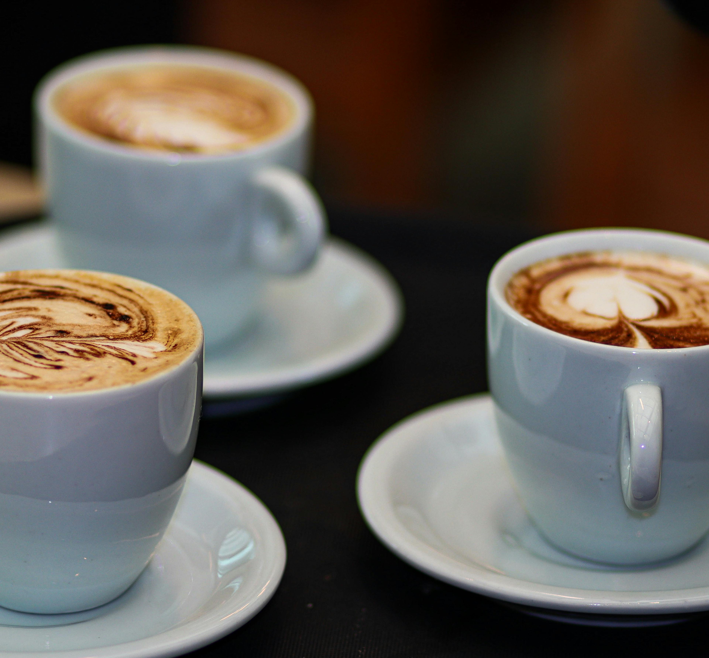

Perfect morning coffee

HomeLike many, when I get up in the morning I like a great cup of coffee. As time has gone on my chase for a perfect cup has driven me to try several different combinations.
These started with regular old drip coffee and canned ground coffee, up to today using artisan roasted beans ground for each cup with a personal espresso machine.
For this recipe you will need:
- Water
- Dark to medium roast coffee beans of your liking
- Espresso machine!
- Syrup of your choice Perfect vanilla recipe
- Milk of your choice
- Grind coffee beans
- press coffee into portafilter, insert portafilter into machine
- add approximately 2 Tbsp. to the bottom of your favorite coffee mug
- place coffee mug under portafilter
- pull shots of espresso directly into your mug (saves on some dishes)
- add milk to steam cup
- steam milk to desired temperature and frothiness
- mix coffee and syrup in mug
- while mixture is still swirling, begin pouring milk into mug
- ENJOY!